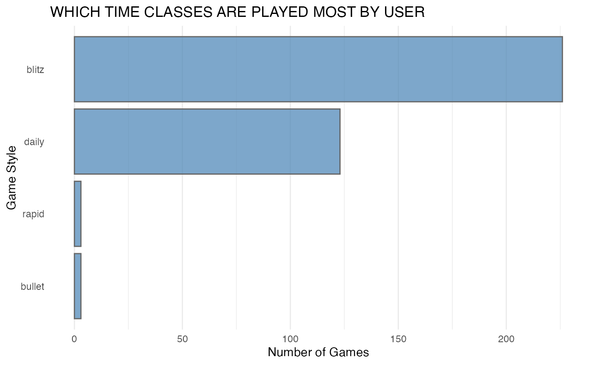
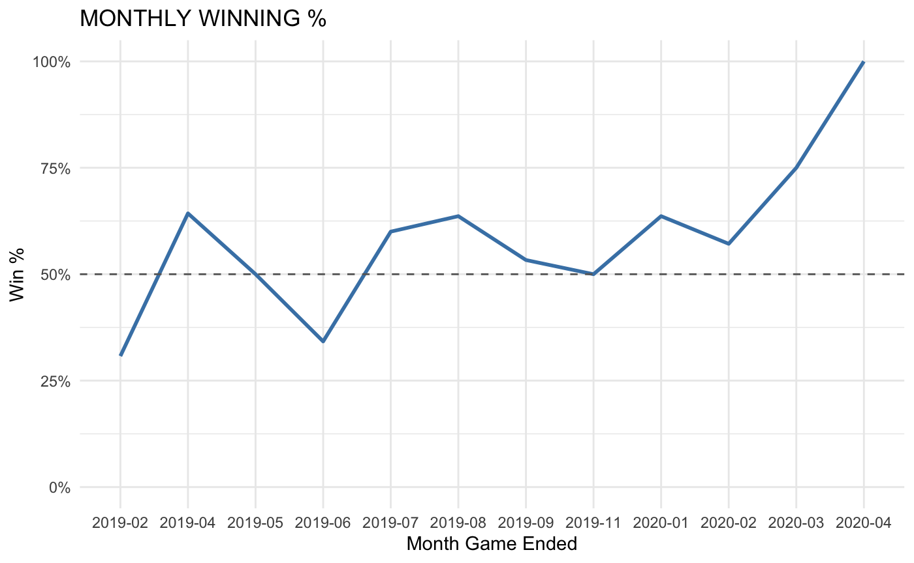
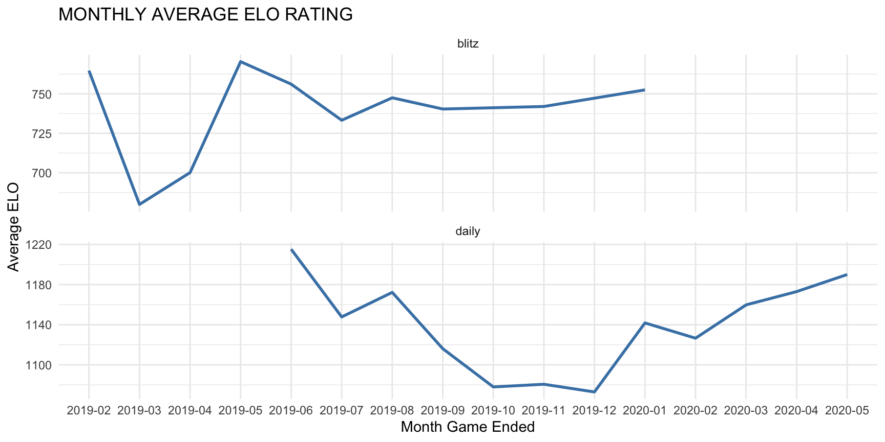
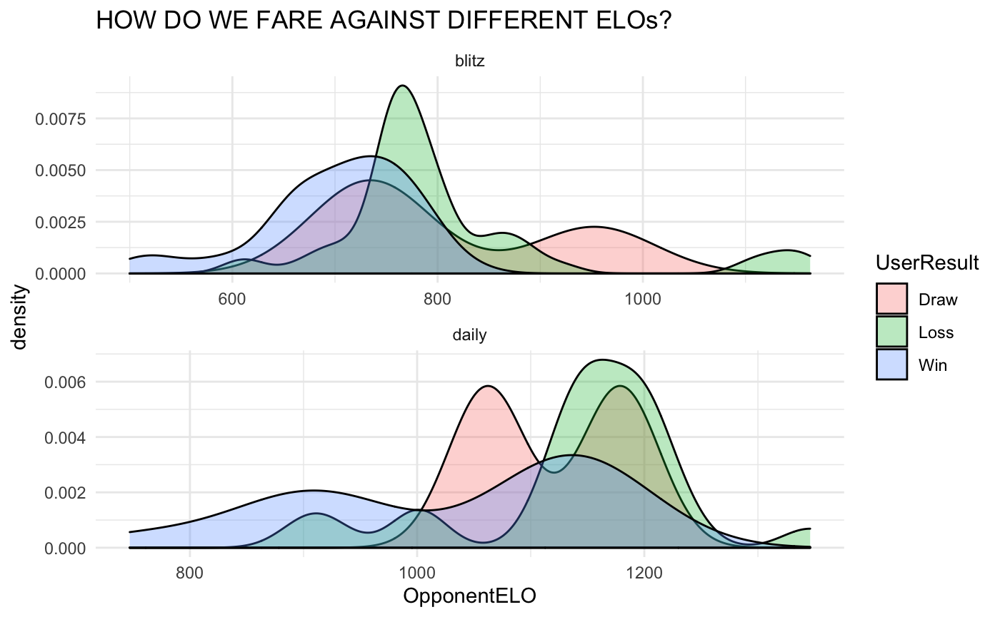

vignettes/using_chessR_package.Rmd
using_chessR_package.RmdYou can install the chessR package from github with:
# devtools::install_github("JaseZiv/chessR") library(chessR)
The functions available in this package are designed to enable the extraction of chess game data.
The functions detailed below relate to extracting data from chess.com
The get_raw_chessdotcom function can take either a single, or multiple usernames. It will output a data frame with all the games played by that user. The function replaces get_raw_game_data from version 1.1.0
raw_chessdotcom <- get_raw_chessdotcom("JaseZiv") #> Extracting JaseZiv Data, please wait
glimpse(raw_chessdotcom) #> Observations: 178 #> Variables: 25 #> $ GameRules <chr> "chess", "chess", "chess", "chess", "chess", "chess",… #> $ TimeClass <chr> "blitz", "blitz", "blitz", "blitz", "blitz", "blitz",… #> $ Event <chr> "Live Chess", "Live Chess", "Live Chess", "Live Chess… #> $ Site <chr> "Chess.com", "Chess.com", "Chess.com", "Chess.com", "… #> $ Date <chr> "2019.02.12", "2019.02.12", "2019.02.12", "2019.02.12… #> $ Round <chr> "-", "-", "-", "-", "-", "-", "-", "-", "-", "-", "-"… #> $ White <chr> "JaseZiv", "Commander0101", "JaseZiv", "oscarbazan", … #> $ Black <chr> "hKotla", "JaseZiv", "oscarbazan", "JaseZiv", "oscarb… #> $ Result <chr> "0-1", "1-0", "1-0", "1-0", "1-0", "0-1", "0-1", "0-1… #> $ ECO <chr> "C00", "A40", "B00", "D02", "B00", "B40", "B00", "A00… #> $ ECOUrl <chr> "https://www.chess.com/openings/French-Defense-Reti-S… #> $ CurrentPosition <chr> "rn4nr/pbB1kppp/4pq2/2pp2N1/4P2K/6P1/7P/5B1R w - -", … #> $ Timezone <chr> "UTC", "UTC", "UTC", "UTC", "UTC", "UTC", "UTC", "UTC… #> $ UTCDate <chr> "2019.02.12", "2019.02.12", "2019.02.12", "2019.02.12… #> $ UTCTime <chr> "05:44:13", "07:45:57", "07:54:52", "07:55:50", "08:0… #> $ WhiteElo <chr> "867", "757", "819", "792", "808", "797", "821", "773… #> $ BlackElo <chr> "1102", "702", "783", "738", "783", "859", "922", "77… #> $ TimeControl <chr> "180", "180", "180", "180", "180", "180", "180", "180… #> $ Termination <chr> "hKotla won on time", "Commander0101 won on time", "J… #> $ StartTime <chr> "05:44:13", "07:45:57", "07:54:52", "07:55:50", "08:0… #> $ EndDate <chr> "2019.02.12", "2019.02.12", "2019.02.12", "2019.02.12… #> $ EndTime <chr> "05:48:35", "07:51:41", "07:55:21", "08:01:40", "08:0… #> $ Link <chr> "https://www.chess.com/live/game/3452526692", "https:… #> $ Moves <chr> "1. e4 {[%clk 0:02:52.8]} 1... e6 {[%clk 0:02:59.8]} … #> $ Username <chr> "JaseZiv", "JaseZiv", "JaseZiv", "JaseZiv", "JaseZiv"…
The following function will extract the same data that the get_raw_chessdotcom() function will, however this function will also include additional columns to make analysing data easier.
The function can be used either on a single player, or a character vector of multiple players.
chess_analysis_single <- get_game_data("JaseZiv") #> Extracting JaseZiv Data, please wait #> Data extracted
glimpse(chess_analysis_single) #> Observations: 177 #> Variables: 36 #> $ rules <chr> "chess", "chess", "chess", "chess", "chess", "chess",… #> $ time_class <chr> "blitz", "blitz", "blitz", "blitz", "blitz", "blitz",… #> $ Event <chr> "Live Chess", "Live Chess", "Live Chess", "Live Chess… #> $ Site <chr> "Chess.com", "Chess.com", "Chess.com", "Chess.com", "… #> $ Date <date> 2019-02-12, 2019-02-12, 2019-02-12, 2019-02-12, 2019… #> $ Round <chr> "-", "-", "-", "-", "-", "-", "-", "-", "-", "-", "-"… #> $ White <chr> "JaseZiv", "Commander0101", "JaseZiv", "oscarbazan", … #> $ Black <chr> "hKotla", "JaseZiv", "oscarbazan", "JaseZiv", "oscarb… #> $ Result <chr> "0-1", "1-0", "1-0", "1-0", "1-0", "0-1", "0-1", "0-1… #> $ ECO <chr> "C00", "A40", "B00", "D02", "B00", "B40", "B00", "A00… #> $ ECOUrl <chr> "https://www.chess.com/openings/French-Defense-Reti-S… #> $ CurrentPosition <chr> "rn4nr/pbB1kppp/4pq2/2pp2N1/4P2K/6P1/7P/5B1R w - -", … #> $ Timezone <chr> "UTC", "UTC", "UTC", "UTC", "UTC", "UTC", "UTC", "UTC… #> $ UTCDate <chr> "2019.02.12", "2019.02.12", "2019.02.12", "2019.02.12… #> $ UTCTime <chr> "05:44:13", "07:45:57", "07:54:52", "07:55:50", "08:0… #> $ WhiteElo <chr> "867", "757", "819", "792", "808", "797", "821", "773… #> $ BlackElo <chr> "1102", "702", "783", "738", "783", "859", "922", "77… #> $ TimeControl <chr> "180", "180", "180", "180", "180", "180", "180", "180… #> $ Termination <chr> "hKotla won on time", "Commander0101 won on time", "J… #> $ StartTime <chr> "05:44:13", "07:45:57", "07:54:52", "07:55:50", "08:0… #> $ EndDate <date> 2019-02-12, 2019-02-12, 2019-02-12, 2019-02-12, 2019… #> $ EndTime <chr> "05:48:35", "07:51:41", "07:55:21", "08:01:40", "08:0… #> $ Link <chr> "https://www.chess.com/live/game/3452526692", "https:… #> $ Moves <chr> "\n1. e4 {[%clk 0:02:52.8]} 1... e6 {[%clk 0:02:59.8]… #> $ winner <chr> "Black", "White", "White", "White", "White", "Black",… #> $ Username <chr> "JaseZiv", "JaseZiv", "JaseZiv", "JaseZiv", "JaseZiv"… #> $ n_Moves <dbl> 21, 28, 5, 29, 25, 10, 26, 31, 35, 41, 29, 7, 35, 33,… #> $ UserOpponent <chr> "hKotla", "Commander0101", "oscarbazan", "oscarbazan"… #> $ UserColour <chr> "White", "Black", "White", "Black", "White", "Black",… #> $ OpponentColour <chr> "Black", "White", "Black", "White", "Black", "White",… #> $ UserELO <dbl> 867, 702, 819, 738, 808, 859, 821, 773, 744, 722, 680… #> $ OpponentELO <dbl> 1102, 757, 783, 792, 783, 797, 922, 771, 850, 875, 60… #> $ UserResult <chr> "Loss", "Loss", "Win", "Loss", "Win", "Win", "Loss", … #> $ DaysTaken <drtn> 0 days, 0 days, 0 days, 0 days, 0 days, 0 days, 0 da… #> $ GameEnding <chr> "on time", "on time", "by checkmate", "on time", "on … #> $ Opening <chr> "Defense-Reti-Spielmann-Attack", "Pawn-Opening-Polish…
The below function allows the user to extract the top 50 leaders on the leaderboards for a number of different game types.
The game types include:
“daily”, “daily960”, “live_rapid”, “live_blitz”, “live_bullet”, “live_bughouse”, “live_blitz960”, “live_threecheck”, “live_crazyhouse”, “live_kingofthehill”, “lessons” and “tactics”.
The usernames that are contained in the results can then be passed to get_raw_chessdotcom() outlined above.
daily_leaders <- get_top50_leaderboard(game_type = "daily")
glimpse(daily_leaders) #> Observations: 50 #> Variables: 13 #> $ player_id <int> 7848044, 4147249, 1629533, 10506874, 4767295, 2810922, 21… #> $ url <chr> "https://www.chess.com/member/francisbegbie", "https://ww… #> $ username <chr> "francisbegbie", "mizant", "mackus", "olomi007", "xquse",… #> $ score <int> 2578, 2556, 2535, 2521, 2516, 2503, 2486, 2483, 2482, 248… #> $ rank <int> 1, 2, 3, 4, 5, 6, 7, 8, 9, 10, 11, 12, 13, 14, 15, 16, 17… #> $ country <chr> "https://api.chess.com/pub/country/XE", "https://api.ches… #> $ title <chr> "FM", "FM", "NM", "GM", NA, "NM", NA, "FM", NA, "NM", "FM… #> $ name <chr> "Andy Mack", "Aleksandar Randjelovic", "Mark Bohannon", "… #> $ status <chr> "premium", "premium", "premium", "premium", "premium", "p… #> $ avatar <chr> "https://images.chesscomfiles.com/uploads/v1/user/7848044… #> $ trend_score <df[,2]> <data.frame[26 x 2]> #> $ trend_rank <df[,2]> <data.frame[26 x 2]> #> $ flair_code <chr> "diamond_traditional", "diamond_traditional", "diamond_tr…
This section will detail some of the function to use for analysis and extracting information from the raw games data extracts.
To be able to see how many moves a game lasted, the return_num_moves function can be used.
It will parse through the Moves column in the extracted data frame and return a vector of moves, each one being for each game.
# function to extract the number of moves in each game raw_chessdotcom$nMoves <- return_num_moves(moves_string = raw_chessdotcom$Moves) # inspect output head(raw_chessdotcom[, c("Moves", "nMoves")]) #> Moves #> 1 1. e4 {[%clk 0:02:52.8]} 1... e6 {[%clk 0:02:59.8]} 2. g3 {[%clk 0:02:49.2]} 2... b6 {[%clk 0:02:58.3]} 3. Nf3 {[%clk 0:02:47.5]} 3... Bb7 {[%clk 0:02:57.2]} 4. d3 {[%clk 0:02:42.3]} 4... Qf6 {[%clk 0:02:54.3]} 5. Na3 {[%clk 0:02:34.8]} 5... d5 {[%clk 0:02:52.4]} 6. Bg5 {[%clk 0:02:21.4]} 6... Qxb2 {[%clk 0:02:49.7]} 7. Rb1 {[%clk 0:02:18.7]} 7... Qxa3 {[%clk 0:02:48.2]} 8. Qc1 {[%clk 0:02:02.5]} 8... Qc3+ {[%clk 0:02:45.8]} 9. Qd2 {[%clk 0:01:46.2]} 9... Qa3 {[%clk 0:02:42.5]} 10. Bf4 {[%clk 0:01:39.9]} 10... Kd7 {[%clk 0:02:38.6]} 11. Qb4 {[%clk 0:01:27.2]} 11... Bxb4+ {[%clk 0:02:36.1]} 12. Ke2 {[%clk 0:01:14.6]} 12... Bc5 {[%clk 0:02:29]} 13. Ng5 {[%clk 0:01:08.9]} 13... Ke7 {[%clk 0:02:21.9]} 14. Bh3 {[%clk 0:01:00]} 14... Qxa2 {[%clk 0:02:19.3]} 15. Rb5 {[%clk 0:00:50.1]} 15... Qxc2+ {[%clk 0:02:16.1]} 16. Kf3 {[%clk 0:00:43.7]} 16... Qxf2+ {[%clk 0:02:13.7]} 17. Kg4 {[%clk 0:00:31]} 17... Qe2+ {[%clk 0:02:11.4]} 18. Kh4 {[%clk 0:00:27.3]} 18... Qxd3 {[%clk 0:02:07.9]} 19. Bf1 {[%clk 0:00:20]} 19... Qd4 {[%clk 0:01:55.1]} 20. Bxc7 {[%clk 0:00:13.2]} 20... Qf6 {[%clk 0:01:51.6]} 21. Rxc5 {[%clk 0:00:03.4]} 21... bxc5 {[%clk 0:01:49.3]} 0-1 #> 2 1. d4 {[%clk 0:02:59.9]} 1... b5 {[%clk 0:02:58.2]} 2. e3 {[%clk 0:02:58.5]} 2... e6 {[%clk 0:02:57]} 3. Nf3 {[%clk 0:02:57.5]} 3... Bb7 {[%clk 0:02:55.4]} 4. Be2 {[%clk 0:02:52.9]} 4... Nc6 {[%clk 0:02:54.7]} 5. c3 {[%clk 0:02:51.4]} 5... Bd6 {[%clk 0:02:50.2]} 6. b4 {[%clk 0:02:49.6]} 6... a5 {[%clk 0:02:46.2]} 7. a3 {[%clk 0:02:46]} 7... axb4 {[%clk 0:02:39.7]} 8. a4 {[%clk 0:02:43]} 8... bxa4 {[%clk 0:02:37.2]} 9. cxb4 {[%clk 0:02:40.3]} 9... Nxb4 {[%clk 0:02:32.9]} 10. Na3 {[%clk 0:02:30.6]} 10... Qf6 {[%clk 0:02:25.8]} 11. Rb1 {[%clk 0:02:21.1]} 11... Qf5 {[%clk 0:02:21.8]} 12. Rb2 {[%clk 0:02:05.4]} 12... Qb1 {[%clk 0:02:21.3]} 13. Nb5 {[%clk 0:01:55.6]} 13... Qe4 {[%clk 0:02:11.7]} 14. Nxc7+ {[%clk 0:01:52]} 14... Kd8 {[%clk 0:02:07]} 15. Nxa8 {[%clk 0:01:49.6]} 15... Bxa8 {[%clk 0:02:05.8]} 16. O-O {[%clk 0:01:47.2]} 16... Qg4 {[%clk 0:01:59.6]} 17. Re1 {[%clk 0:01:32.4]} 17... Nf6 {[%clk 0:01:53.6]} 18. Kf1 {[%clk 0:01:29.1]} 18... Nbd5 {[%clk 0:01:32]} 19. h3 {[%clk 0:01:14.1]} 19... Nc3 {[%clk 0:01:30.1]} 20. Qc2 {[%clk 0:01:04.6]} 20... Qe4 {[%clk 0:01:23.2]} 21. Qxc3 {[%clk 0:01:00]} 21... Nh5 {[%clk 0:01:12.8]} 22. Bd3 {[%clk 0:00:56.6]} 22... Qd5 {[%clk 0:00:55.7]} 23. Rb5 {[%clk 0:00:47.2]} 23... Qxb5 {[%clk 0:00:38.2]} 24. Bxb5 {[%clk 0:00:45]} 24... Nf6 {[%clk 0:00:28.7]} 25. Qa5+ {[%clk 0:00:42.6]} 25... Kc8 {[%clk 0:00:24.6]} 26. Qxa8+ {[%clk 0:00:39.4]} 26... Kc7 {[%clk 0:00:22.6]} 27. Qxh8 {[%clk 0:00:34.5]} 27... Bb4 {[%clk 0:00:00.2]} 28. Rd1 {[%clk 0:00:30]} 1-0 #> 3 1. e4 {[%clk 0:02:59.8]} 1... a6 {[%clk 0:02:58.5]} 2. c3 {[%clk 0:02:58.7]} 2... f6 {[%clk 0:02:55.7]} 3. Na3 {[%clk 0:02:57.5]} 3... h6 {[%clk 0:02:52.2]} 4. Qh5+ {[%clk 0:02:52]} 4... g6 {[%clk 0:02:43]} 5. Qxg6# {[%clk 0:02:50.4]} 1-0 #> 4 1. Nf3 {[%clk 0:02:59.9]} 1... d5 {[%clk 0:02:59.3]} 2. d4 {[%clk 0:02:58.7]} 2... f6 {[%clk 0:02:57.2]} 3. g4 {[%clk 0:02:55.3]} 3... Bxg4 {[%clk 0:02:53.4]} 4. Nh4 {[%clk 0:02:49]} 4... Nc6 {[%clk 0:02:51.2]} 5. f3 {[%clk 0:02:47.7]} 5... Be6 {[%clk 0:02:45.5]} 6. b3 {[%clk 0:02:41.1]} 6... Nh6 {[%clk 0:02:42.3]} 7. Rg1 {[%clk 0:02:36]} 7... b5 {[%clk 0:02:38.6]} 8. Nd2 {[%clk 0:02:33.3]} 8... Nxd4 {[%clk 0:02:35.9]} 9. c3 {[%clk 0:02:30.7]} 9... Ndf5 {[%clk 0:02:25.2]} 10. e4 {[%clk 0:02:29.3]} 10... Nxh4 {[%clk 0:02:23.1]} 11. exd5 {[%clk 0:02:27.4]} 11... Bxd5 {[%clk 0:02:20.7]} 12. f4 {[%clk 0:02:23.2]} 12... Bf3 {[%clk 0:02:15.9]} 13. Bxb5+ {[%clk 0:02:19.9]} 13... Kf7 {[%clk 0:02:05.1]} 14. Nxf3 {[%clk 0:02:18.3]} 14... Nxf3+ {[%clk 0:02:03]} 15. Qxf3 {[%clk 0:02:16.2]} 15... e6 {[%clk 0:01:54.8]} 16. h4 {[%clk 0:02:01.4]} 16... Qd5 {[%clk 0:01:49.1]} 17. c4 {[%clk 0:01:50.3]} 17... Qd8 {[%clk 0:01:25.6]} 18. f5 {[%clk 0:01:41.9]} 18... Nxf5 {[%clk 0:01:19.3]} 19. h5 {[%clk 0:01:33.8]} 19... h6 {[%clk 0:01:10.1]} 20. Qg2 {[%clk 0:01:18.6]} 20... Rc8 {[%clk 0:01:04.4]} 21. Qg6+ {[%clk 0:01:16.5]} 21... Ke7 {[%clk 0:00:54.1]} 22. Ba3+ {[%clk 0:01:15.2]} 22... Nd6 {[%clk 0:00:39.8]} 23. Kf2 {[%clk 0:00:58.5]} 23... c6 {[%clk 0:00:38.3]} 24. Rae1 {[%clk 0:00:56.9]} 24... Qb6+ {[%clk 0:00:36]} 25. Kg2 {[%clk 0:00:54.3]} 25... Kd8 {[%clk 0:00:20.7]} 26. Rxe6 {[%clk 0:00:43.4]} 26... Kd7 {[%clk 0:00:08.5]} 27. Rge1 {[%clk 0:00:37.5]} 27... Nxb5 {[%clk 0:00:03]} 28. Rd1+ {[%clk 0:00:32.3]} 28... Kc7 {[%clk 0:00:00.4]} 29. Qg3+ {[%clk 0:00:25]} 1-0 #> 5 1. e4 {[%clk 0:02:59.2]} 1... Nc6 {[%clk 0:02:59.1]} 2. g3 {[%clk 0:02:57.5]} 2... e6 {[%clk 0:02:54.1]} 3. b3 {[%clk 0:02:47.5]} 3... d6 {[%clk 0:02:53.1]} 4. Nc3 {[%clk 0:02:44.9]} 4... e5 {[%clk 0:02:52]} 5. Nf3 {[%clk 0:02:35.7]} 5... g6 {[%clk 0:02:46.9]} 6. Ba3 {[%clk 0:02:30.8]} 6... Bg4 {[%clk 0:02:42.2]} 7. Be2 {[%clk 0:02:25.6]} 7... h5 {[%clk 0:02:40.3]} 8. Ng5 {[%clk 0:02:20.7]} 8... Qxg5 {[%clk 0:02:33.9]} 9. h3 {[%clk 0:02:18.2]} 9... Be6 {[%clk 0:02:25.6]} 10. h4 {[%clk 0:02:15]} 10... Qf6 {[%clk 0:02:20.4]} 11. Bc4 {[%clk 0:02:00.7]} 11... g5 {[%clk 0:02:13.3]} 12. O-O {[%clk 0:01:58.1]} 12... gxh4 {[%clk 0:02:11.3]} 13. gxh4 {[%clk 0:01:55.4]} 13... Nge7 {[%clk 0:02:01.3]} 14. f4 {[%clk 0:01:38.9]} 14... Rg8+ {[%clk 0:01:59.4]} 15. Kf2 {[%clk 0:01:32.4]} 15... Bg4 {[%clk 0:01:49.6]} 16. Qe1 {[%clk 0:01:25.2]} 16... Qxf4+ {[%clk 0:01:45.8]} 17. Kg1 {[%clk 0:01:22.8]} 17... Bh3+ {[%clk 0:01:38]} 18. Kh1 {[%clk 0:01:07.3]} 18... Qg4 {[%clk 0:01:17.8]} 19. Rg1 {[%clk 0:01:02]} 19... Qf3+ {[%clk 0:01:14.2]} 20. Kh2 {[%clk 0:00:56.9]} 20... Qf4+ {[%clk 0:00:59]} 21. Kh1 {[%clk 0:00:51.9]} 21... Nd4 {[%clk 0:00:49.2]} 22. Rxg8 {[%clk 0:00:49.6]} 22... Nf3 {[%clk 0:00:44.6]} 23. Qf2 {[%clk 0:00:40.6]} 23... Nh2 {[%clk 0:00:08.5]} 24. Qxh2 {[%clk 0:00:34]} 24... Qf3+ {[%clk 0:00:04.7]} 25. Kg1 {[%clk 0:00:22.3]} 1-0 #> 6 1. e4 {[%clk 0:02:59.9]} 1... c5 {[%clk 0:02:57.8]} 2. Nf3 {[%clk 0:02:58.9]} 2... e6 {[%clk 0:02:56]} 3. g3 {[%clk 0:02:57.5]} 3... Qa5 {[%clk 0:02:50.9]} 4. Nc3 {[%clk 0:02:55.9]} 4... Bd6 {[%clk 0:02:38.1]} 5. d3 {[%clk 0:02:41.9]} 5... Nf6 {[%clk 0:02:33.9]} 6. Bd2 {[%clk 0:02:37.8]} 6... e5 {[%clk 0:02:27.5]} 7. Bg2 {[%clk 0:02:35.5]} 7... Qb6 {[%clk 0:02:15.8]} 8. O-O {[%clk 0:02:23.9]} 8... Ng4 {[%clk 0:02:10.8]} 9. Ng5 {[%clk 0:02:19.2]} 9... Qxb2 {[%clk 0:01:52.8]} 10. Qxg4 {[%clk 0:02:13.5]} 10... Qxc2 {[%clk 0:01:42.1]} 0-1 #> nMoves #> 1 21 #> 2 28 #> 3 5 #> 4 29 #> 5 25 #> 6 10
The chess.com data extract doesn’t have how the game ended on its own. To get the game ending on its own, the get_game_ending function can be used.
# function to extract the ending of chess.com data raw_chessdotcom$Ending <- get_game_ending(termination_string = raw_chessdotcom$Termination, white = raw_chessdotcom$White, black = raw_chessdotcom$Black) # inspect output head(raw_chessdotcom[, c("Termination", "White", "Black", "Ending")]) #> Termination White Black Ending #> 1 hKotla won on time JaseZiv hKotla on time #> 2 Commander0101 won on time Commander0101 JaseZiv on time #> 3 JaseZiv won by checkmate JaseZiv oscarbazan by checkmate #> 4 oscarbazan won on time oscarbazan JaseZiv on time #> 5 JaseZiv won on time JaseZiv oscarbazan on time #> 6 JaseZiv won on time rojarosy JaseZiv on time
Given two players, one playing on white and the other on black, we want to be able to know the username of the winner. To get this information, use the get_winner function.
# function to extract the winner of each game raw_chessdotcom$Winner <- get_winner(result_column = raw_chessdotcom$Result, white = raw_chessdotcom$White, black = raw_chessdotcom$Black) # inspect output head(raw_chessdotcom[, c("White", "Black", "Result", "Winner")]) #> White Black Result Winner #> 1 JaseZiv hKotla 0-1 hKotla #> 2 Commander0101 JaseZiv 1-0 Commander0101 #> 3 JaseZiv oscarbazan 1-0 JaseZiv #> 4 oscarbazan JaseZiv 1-0 oscarbazan #> 5 JaseZiv oscarbazan 1-0 JaseZiv #> 6 rojarosy JaseZiv 0-1 JaseZiv
This section will perform some exploratory data analysis on the analysis data set provided by get_game_data(). It is by no means an exhaustive list of topics to analyse, rather, it is designed to give the user a few ideas of what can be done with the analysis data provided.
chess_analysis_single %>% count(time_class) %>% ggplot(aes(x= reorder(time_class,n), y= n)) + geom_col(fill = "steelblue", colour = "grey40", alpha = 0.7) + labs(x= "Game Style", y= "Number of Games") + ggtitle("WHICH TIME CLASSES ARE PLAYED MOST") + coord_flip() + theme_minimal() + theme(panel.grid.major.y = element_blank())

chess_analysis_single %>% mutate(MonthEnd = paste(year(EndDate), str_pad(lubridate::month(ymd(EndDate)), 2, side = "left", pad = "0"), sep = "-")) %>% group_by(MonthEnd, UserResult) %>% summarise(n = n()) %>% mutate(WinPercentage = n / sum(n)) %>% filter(UserResult == "Win") %>% ggplot(aes(x= MonthEnd, y= WinPercentage, group=1)) + geom_line(colour= "steelblue", size=1) + geom_hline(yintercept = 0.5, linetype = 2, colour = "grey40") + scale_y_continuous(labels = percent, limits = c(0,1)) + labs(x= "Month Game Ended", y= "Win %") + ggtitle("MONTHLY WINNING %") + theme_minimal()

chess_analysis_single %>% filter(time_class %in% c("blitz", "daily")) %>% mutate(MonthEnd = paste(year(EndDate), str_pad(lubridate::month(ymd(EndDate)), 2, side = "left", pad = "0"), sep = "-")) %>% group_by(MonthEnd, time_class) %>% summarise(AverageELO = mean(UserELO, na.rm = T)) %>% ggplot(aes(x= MonthEnd, y= AverageELO, group=1)) + geom_line(colour= "steelblue", size=1) + labs(x= "Month Game Ended", y= "Average ELO") + ggtitle("MONTHLY AVERAGE ELO RATING") + facet_wrap(~ time_class, scales = "free_y", ncol = 1) + theme_minimal()

chess_analysis_single %>% filter(time_class %in% c("blitz", "daily")) %>% ggplot(aes(x= OpponentELO, fill = UserResult)) + geom_density(alpha = 0.3) + ggtitle("HOW DO WE FARE AGAINST DIFFERENT ELOs?") + facet_wrap(~ time_class, scales = "free", ncol = 1) + theme_minimal()
